You are here: Home → Mini Project 2
Mini Project 2 - Rendering your Scene!
We're going to revisit your UCBUGG Mini Projects again for this week's assignment. You will learn about how to set up lights and cameras in your project and finally render out an image, and a turntable.
Setting Current Project
First of all, if you worked on another account, make sure you put your UCBUGG Mini Project under Documents/maya/projects (My Documentsmayaprojects for Windows). Then in Maya, set your project to UCBUGG Mini Project.
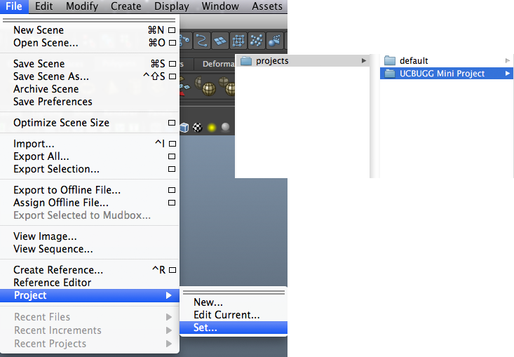
Now open up your main set that you worked on last class. Mine is named Main Scene.ma
Now we'll proceed to rendering our very first maya image!
Cameras
Before we go any further, lets learn a bit about the cameras. Do you remember your outliner? Remember how it had four camera shaped icons named persp, top, front, and side? These are actually cameras that Maya creates by default. So you've been using cameras all this time without knowing! The very first view you get when you open Maya is the persp camera, and when you open your four-views the cameras you get are those four cameras!
However, we need to set up a separate camera we can render through. This is because we are going to be moving around in those four cameras and can't keep our camera locked which is most likely what you want when you find a nice composition. Let's use a camera I have already set up for you named turntablecam.ma. Download turntablecam.ma to scenes/sets.
Import
During the last project we learned how to reference in other Maya scenes into another Maya scene. This week, we'll be using a tool called Importing instead.
Simply speaking, importing brings in other Maya scene files directly into the current scene, instead of creating only a reference that continuously refers to the original file. It is significantly less powerful than referencing in terms of features, but what we'll be doing with the camera is only using it as a one time tool so it fits are purposes just fine. If you want to learn more about the differences between importing and referencing, please read the Extra for Experts section.
Enough with the long intro, let's actually import our camera.
Remember to do this from your sets file! Go to File->Import and select scenes/sets/turntablecam.ma to import.
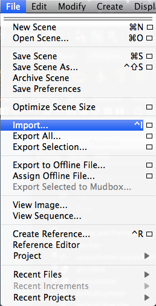
Though not immediately visible, we have imported the camera into the scene. Now we want to view through this camera, so in your Panels drop-down menu that's on the top left right above your Maya main view, select turntablecam:turntableCam
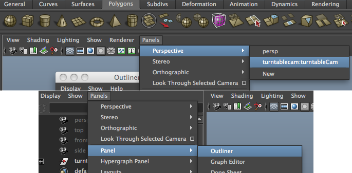
You will notice that your main view has changed and on the very bottom of your screen the green text has changed from persp to turntablecam:turntableCamGrp.
At this moment, switch back to the persp view using the Panels menu again. We will come back to this camera again.
Let's try rendering the image from the persp camera now. The rendering tool is located on the top of Maya right above the shelf and below the menu.
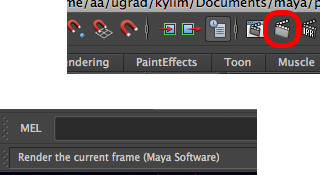
If you have your cursor hovering over the icon and look at the bottom part of Maya, you can tell that this is the Render the Current Frame icon.
This is what my render looks by the way.
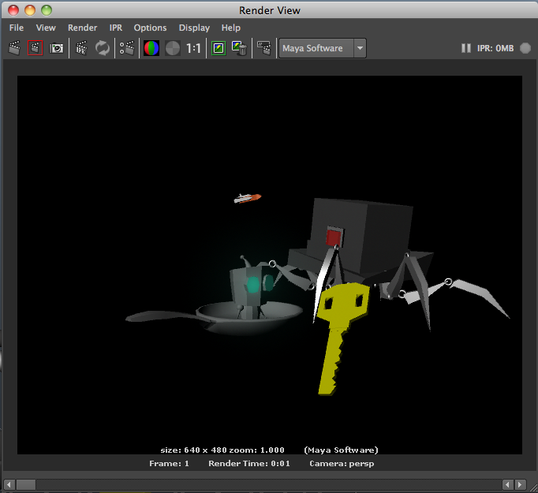
I don't know about you, but I think this is extremely ugly. It's very dark and also the objects don't look like they do in our persp panel view. We're obviously missing something big here.
Loading Mental Ray
We must load in the Maya renderer called Mental Ray in order to get prettier images than the default options.
First of all, select the plug-in manager. The Plug-In manager, which we load various plug-ins including Mental Ray from, is located under Window->Settings/Preferences->Plug-in Manager.
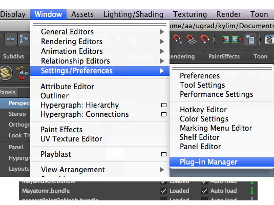
Loaded for mayatomr(stands for Maya to Mental Ray) will load Mental Ray for this session of Maya, and auto-load will tell Maya to automatically load Mental Ray when you open Maya again in the future. Make sure to check both.
Now, Mental Ray is loaded in to Maya so that we may use it. Open up the Render View by clicking the icon that's left of the Render the Current Frame icon, and change your renderer to mental ray from Maya Software.
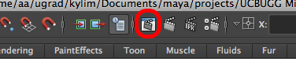
Hit the Render the Current Frame icon again which can be found directly in the Render View and voila!
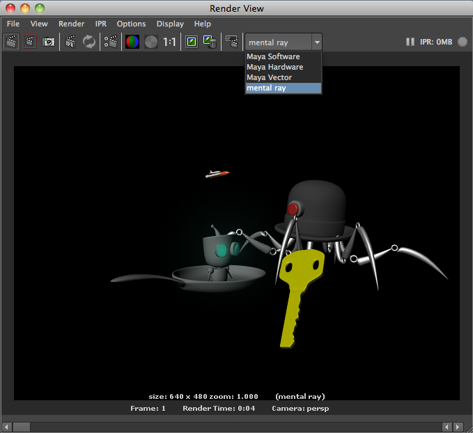
You'll notice it's much prettier but still not very bright. It's time to add lights!
Lighting your Scene
You'll notice that the result is an extremely boring scene with not much interesting shades. In order to make renders pretty you must light your scene. (Please don't burn the monitor.)
I have prepared a light rig you can download and use. Put this lightRig.ma into scenes/sets just like the camera and import it into your main scene.
Nothing seems to have changed right? You can view the lights by clicking the use all lights icon. (Hotkey: 7 on your keyboard)
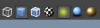
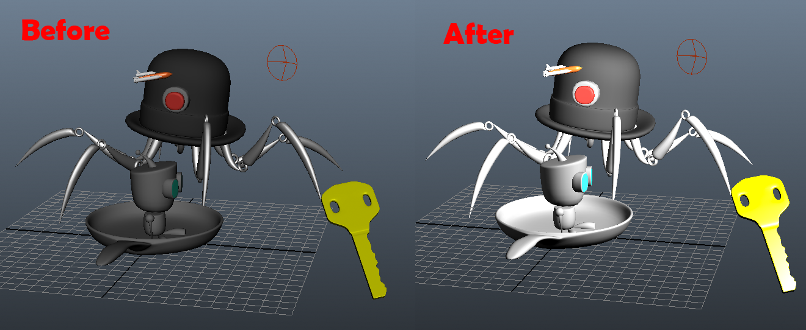
Unfortunately, there is so much more to cover before I can start talking about lighting more so if you have any questions ask! Feel free to play around with the light settings though.
Finally, Render!!
Rendering a Single Image
Again lets try rendering from the Render View again.
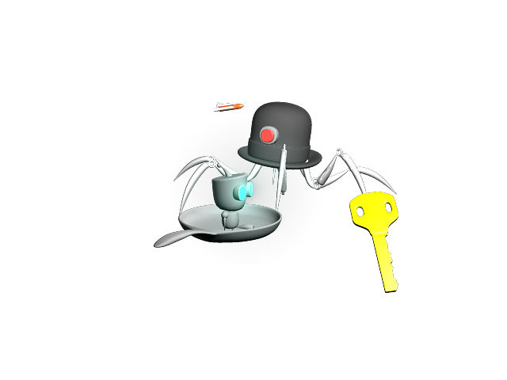
It looks so much better doesn't it? Great now from Render View you can save your image out as a jpg, gif, png, or any of your favorite image format!
Batch Render
WARNING! WARNING! Now comes a bit of a daunting part. If you hadn't noticed already, some of Maya's tools have a lot of option boxes everywhere. The Maya renderer is one of those tools. As there's too much to cover before I even start talking about the awesome features these options allow you to do, I will mostly zoom pass them. But, we will revisit animation and rendering again and again, which is much better than giving you all the information at once so don't worry! Just keep to the path and everything will be okay!
Now you've learned how to render out single images right? Well, turns out this is an animation class and we are more interested in many images played in succession. The way to do is using Batch Render.
Rendering an Animation
If we want an animation, we have to have things moving! Well, that was an obvious statement. But we haven't taught you how to do that yet right? Well, remember the camera that you imported at the beginning? I've gone and made it move around your model like a turntable. So we're going to bring the camera back using our Panels drop-down menu again.
If you look at the bottom of your maya window, you'll notice a bar that has markings up to 24. This is called the Time Line. This denotes what time we are currently in the scene by frames. If you don't know what this is don't worry too much. For now, you only need to know that there are 24 frames in one second so a single frame is 1/24 seconds.
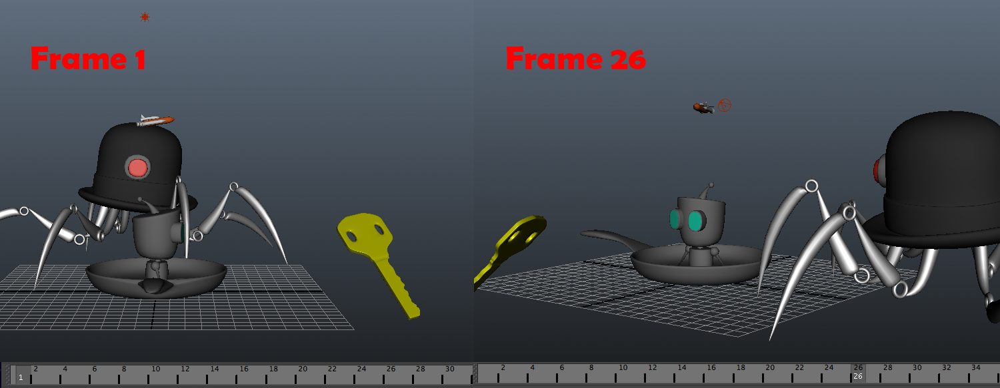
First, lets start expanding our Time Line to 72 frames so we have a little bit more time than a single second.
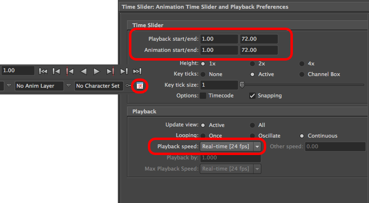
If you click on your Animation Preferences icon located at the very bottom right of Maya, it will open a new settings window. Make the Playback start/end 72.00 and Playback speed Real-time [24 fps].
Now hit the play triangle right above where you found the Animation preferences.
Your main screen shows your robots rotating right? Actually your camera is orbiting around your model. (Now you know where the name turntableCam came from.) Hit ESC or the stop square to stop the spinning.
You can zoom in and zoom out just like you could in persp with the mouse wheel. I would recommend that you don't pan(using ALT+MMB) around in this camera view though , as that will make the rotation uneven. If you ever lose the camera's original settings you can simply re-import the camera. (Though it might get named turntablecam2:turntableCam)
Now it's time to render this animation out!
Render Settings
First up, we need to make our render settings so that we now render 72 frames instead of only one. Open up the Render Settings window that is located to the right of Render Current Frame.
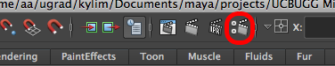 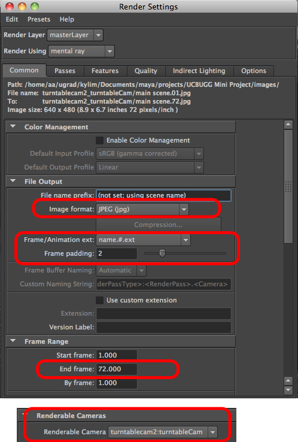
Maya floods you with options here but really there are only a few options we are going to be worried about today.
- Image format: JPEG (jpg)
- Frame/Animation ext: name.#.ext
- Frame padding: 2
- End frame: 72
- Renderable Camera: turntablecam:turntableCam
Also take note at the top as that tells you where these images will be rendered off to.
Once that's done, you're ready to click the render button and see it go.
In order to get the Batch Render menu, we need to first change our Context into Rendering. Make sure to put this back to Polygons after we're done with this section since that's probably what you're going to be mostly using.
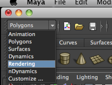
Now we can select Batch Render and see it go~
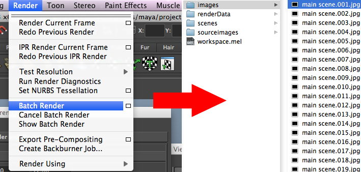
All these images will go into your _images folder under projects by default.
Your Very First Maya Image and Movie
You now have your very first Maya image and movie rendered! If you've noticed, we've gone through a simplified animation production pipeline in just two weeks! Give yourself a pat on the back as now you can say "I know how to make an animation." Excuse my being wishy-washy regarding certain parts of the project. This was just to give you a taste of Maya and I promise we'll eventually answer all those questions you have! The things we'll be learning from now on is mostly going to be features that expand on what you already know.
How to Submit
Again, similar to last week, we're going to be compressing the whole folder. However, if you've notice 72 images is a lot of files. So instead of submitting those images directly. Lets make them into an actual movie file you can view!
Making a Movie File
If you're using the lab machines, you can use QuickTime Pro to save the Images out onto a movie file. If you're using any other Operating System and do not know how to do this, you can do a google search or ask us.
Open up QuickTime Player 7. You can do this through spotlight on the top right corner.
Select File->Open Image Sequence and select the very first file (images/main scene.01.jpg in my case).
Now you can actually play through the turn table! Make it loop by going to View->Loop and you will see a continuous turn table. Let's export this as a .mov file by selecting File->Export. You can now name it whatever you want. I saved mine as Main Scene Turntable.
Submit
Now you can temporarily move the images somewhere else and just leave your .mov file in the images folder instead. Make sure to also move your single image as well!
Like we did last week, send your compressed project folder as HW2 YOURNAME Mini Project 2 to homework@ucbugg.com with the subject SECTION DAY-LAST NAME-FIRST NAME-HW2.
Extra for Experts
Extra Credit!
Well, not literally extra credit, but now you guys know how to model objects, put them in a scene, light them up, perhaps give them color(if you read the extra for experts section in Basic Modeling), and finally render them out as an image/movie. Go ahead and have fun with these new sets of skills!
Import vs. Reference
We've learned both Importing and Referencing as a way of bringing in separate scene files into a single Maya scene file. The main difference between importing and referencing is:
- Importing still allows multiple people to work on multiple parts of the project at once.
- However, it lacks the advantages of referencing that allow you to continue to make changes after files have been combined into a file.
- There are certain situations when importing is useful than referencing though.
Imagine the lighting exercise you did for the mini project. If you had referenced the lights and then made changes to them to get just the perfect lighting you want, what would have happened if someone went and added another light in the reference or removed it? Suddenly you have to do all your work over again. Usually if it's a one time-use tool such as the lights in this mini project, importing might be the tool to use.
If, however we had three separate scenes that we wanted to keep the lighting consistent throughout, the lights are no longer a one time-use tool. They need to be the same across all the references with only minor adjustments per scene. In this case we want the light rig to be a reference.
In general, references are more powerful and except for some special situations, you are likely to find them more useful.